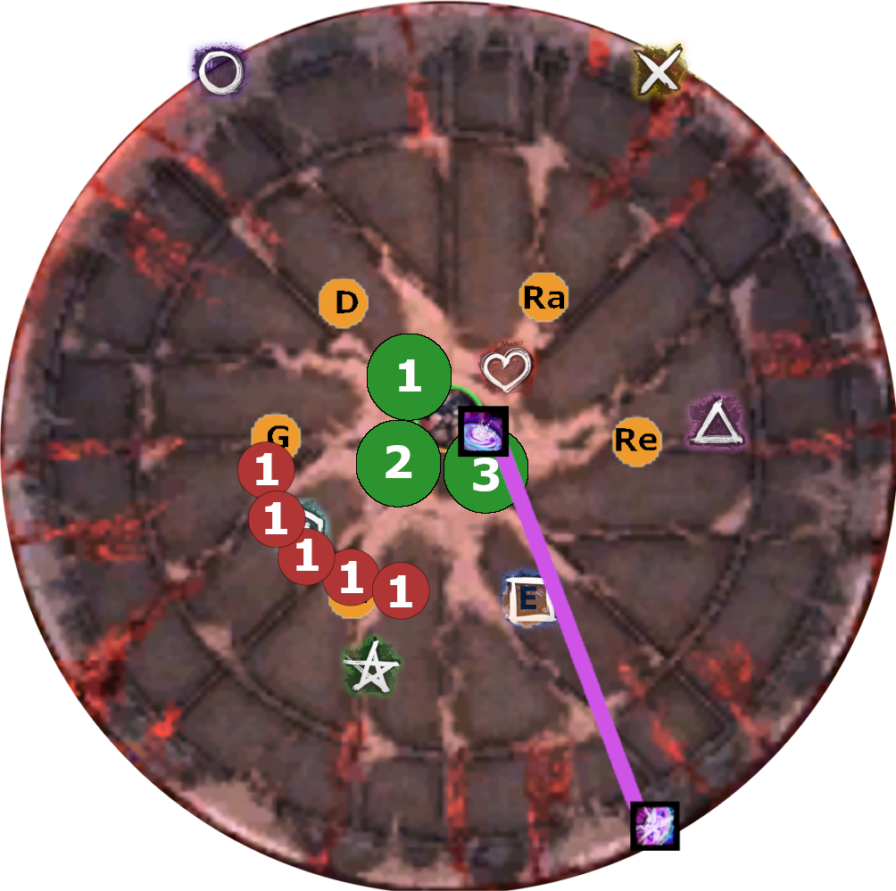

This is a guide/walkthrough specifically for the achievement Apathetic that yields the title Embodiment of Sin.
The guide is structured as follows: an overview is given in Section 2, information about the squad composition in Section 3, the strategy in Section 4 and a walkthrough in Section 5.
Prerequisite
It is assumed that every reader is familiar with Temple of Febe CM and the basic mechanics. These won’t be explained here, as there exist already other guides that fill this hole (e.g. Silverhalf’s Guide).
Navigational information: Depending on your Browser Support, you can use the keyboard shortcut f for fullscreen mode and o for an birds-eye overview of all slides, in which you can navigate with arrow keys (and subsequent presses of o to return to a slide view).
Let’s dive in!
In order to complete this achievement, Temple of Febe CM needs to be defeated with all 6 Embodiments active on Cerus, as visible in the picture below. This means that Phase 3 and onward will be the main difference between regular Temple of Febe CM and this.
What’s the reason this is arguably the most difficult PvE achievement right now?
Besides the typical mechanics that one has to deal with in Temple of Febe CM, the following are the key differences that raise the difficulty level:
Point 1 simply has to be practiced and can be managed easily, but point 2 has significantly more impact. There are roughly 7 Empowered Gluttony phases (depends on dps) before the last phase, this yields 7 x 5 Orbs x 3 stacks1 for a total of 105 stacks that tick for 325 damage each. Hence, every player in the squad takes roughly 3.4k extra incoming damage per second, before you get to the last phase, in which the incoming damage quickly ramps up further with Enraged Smashes from Cerus. This brings us to the composition that is essentially required to conquer this challenge.
The composition has to fulfill a few requirements, which arise from the heightened levels of incoming damage, while still having to deal with all of the mechanics. This encompasses: more than 2 healers, to deal with the incoming damage, sources of Immobilize to deal with the Malice adds and enough Portals (Mesmer and Scourge) for efficient movement and to avoid certain mechanics.
Note
It’s also possible to complete EoS with a Virt stack and the common no-immob strat as shown by the recent [Debu] kill, by modifying the common pug strat, but those details aren’t covered here.
There are two main variations that play around Immobilize (PoVs in Hyperlinks):
| Heals | Dps Support | DPS | |
|---|---|---|---|
| 1. | hScg, hChrono, celeScg | qHarb | 6x Scg (PoV1, PoV2) |
| 2. | 2x hChrono, 2x celeScg | 5x Scg, 1x cDE |
Both comps have slightly different strengths and weaknesses, so chose whatever you prefer. In this walkthrough, we’ll focus on comp 1 though.
Heal Alacrity Scourge:
Heal Quickness Chrono:
Cele Alacrity Scourge:
Quick Condition Harbinger:
DPS Scourge:
In this section we take a look at how to deal with the various mechanics encountered in the fight.
Note
Some cornerstones of the strategy are:
Some notes on how Epidemic works:
Important
Straightforward to deal with, we use Mesmer and Scourge Portals to get out of it.
There is one overlap with Rage and Gluttony, where we intentionally took the Rage hit to prevent Orbs from getting through, but more on that later.
Triple Greens are played by having 3 groups and the tenth person as Joker. The 3 groups have a designated group leader, or anchor that represent the location of a marker group. Each group has furthermore a runner and a fill person. For details on how to solve it, check out Silverhalf’s Guide.
Tip
We had organised the groups in terms of left/middle/right, such that the 2 dps supports were in the middle group and a Healer each in the 2 outer groups. Furthermore, the people in the outer groups were each in the same sub, such that providings boons was easier. E.g., the celeScg placed shades on the right group and the qHarb threw Elixirs to the left group.
Walls are usually pretty straightforward: You bait on specific spots and then side step left (when unempowered), or run right (when empowered).
Tip
When jumping over empowered walls, you can escape the boonstrip, however you will still received damage. Both, boonstrip and damage, can be evaded by dodge-jumping over the wall. However, the important part is to not get boonstripped.
As previously mentioned, Malice adds are dealt with in 2 ways:
Tip
In terms of communication and using Epi efficiently, we had the celeScg call out Epi 1/Epi 2 and subgroup 1/2 used Epidemic respectively. The callout timing revolves around Dagger 3 and Epi can be communicated just before Dagger 3 is pressed, to maximize Immob uptime.
Dealing with Gluttony Orbs, is mostly done in the usual way by following one designated group leader. However, there are some overlaps with triple Greens, that make it substantially easier to do those collection in the Green marker groups, because then you are already prepositioning correctly for Greens.
In particular, this is important for the Gluttony/Regret overlap in Phase 2 at ~55% and in P3 at ~17-18%.
Tip
In general, try to let Orbs come close in order to delete them. This refers to Orbs despawning after having collected another Orb in the second beforehand. So e.g. if two Orbs are close together, you can swiftly run through both of them. If you are fast enough, you will only get 1x stack and the second Orb will despawn. (Having blink, or movement-enhancing skills makes this action easier.)
Despair puddles are either placed loosely grouped (unempowered), or for the later and empowered ones in marker groups. Otherwise dealing with Despair is very straightforward. Just be sure to focus on dodging, since they still deal a lot of damage, even on Trialblazer Scourges. This is especially important in the last phase.
The map background shows the Markers that help with navigation and the location of the 6 Embodiments, abbreviated with the starting letters.
Circle, Swirly, Star, Triangle, and X are mostly for portals, whil
Phase 1: part 1
Phase 1: part 2
Phase 1: part 3
Phase 2: part 1 
Phase 2: part 2
Phase 2: part 3
Phase 3: part 1
Phase 3: part 2
Phase 3: part 3
Phase 3: part 4
Phase 3: part 5
Phase 4: part 1
Phase 4: part 2